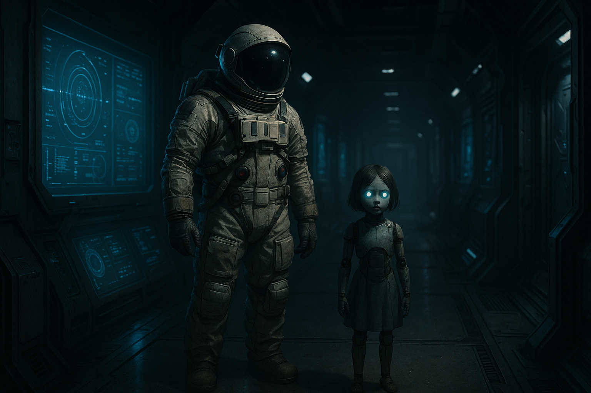

1位

プラグマタ（PRAGMATA）
カプコンが贈る完全新規IP。近未来の月面施設を舞台に、宇宙服の調査員ヒューとアンドロイドの少女ディアナがバディを組んで地球帰還を目指す。ガンシューティングとハッキングパズルを同時に操作する独自のハイブリッドアクションが最大の特徴で、バイオハザードやデビルメイクライのスタッフも参加した意欲作。
おすすめ理由：2026年注目の完全新作IP。パズル×TPS融合の新感覚バトルとディアナの魅力的なキャラクター描写が高評価。カプコンの新境地を体験できる一本。